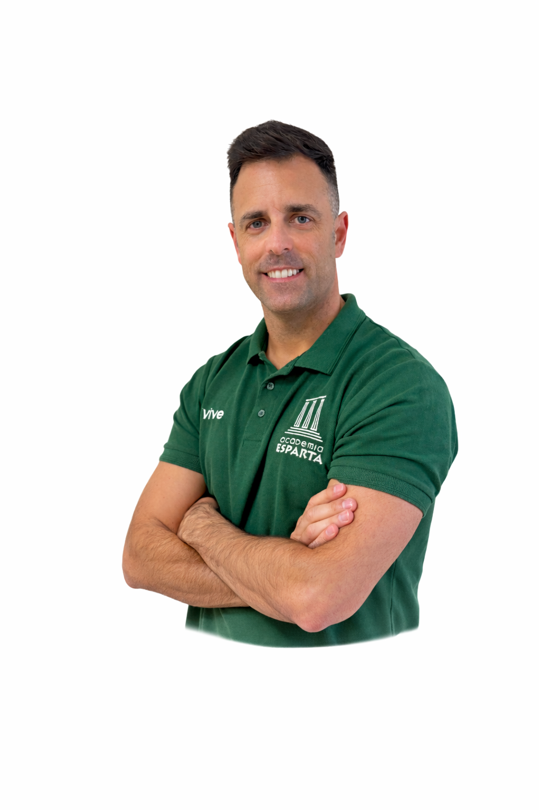

Co-fundador
Miguel Ángel
📐 Matemáticas
🏫 Dirección Académica
Miguel Ángel es uno de los socios y directores académicos de Academia Esparta. Su labor se centra en garantizar una enseñanza rigurosa, estructurada y adaptada a cada alumno, combinando experiencia docente con una planificación clara de los contenidos. Su objetivo es que el alumno no solo apruebe, sino que comprenda, gane seguridad y desarrolle autonomía en el estudio.
+13 años de experiencia
Primaria · ESO · Bachillerato
Método propio Esparta